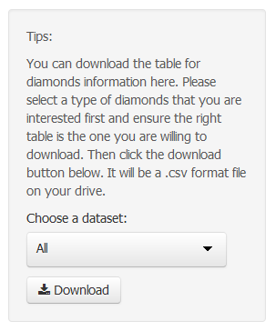
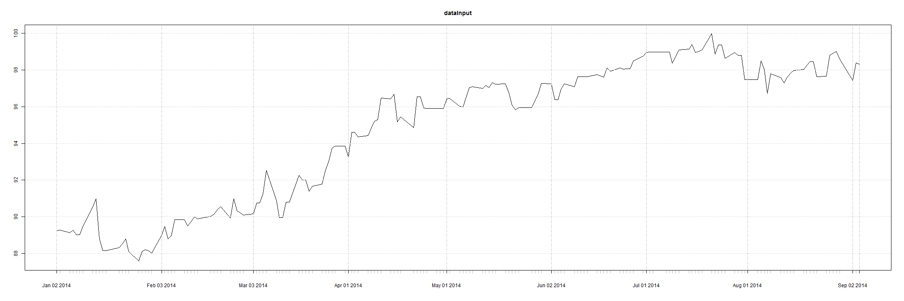

This is a presentation to give a breif description about the shiny application of Diamonds Report.
To begin with, there are four main functions/pages in this application, which are 'summary', 'detailed report', 'download datasets' and 'exchange rate'.
Users can access to above four pages via the bar on the top of each page as following:
 In details, a user can do following things in each page:
Next Slide
In details, a user can do following things in each page:
Next Slide
Shiny App of Diamonds Report
Reproducible Pitch Presentation
Tianxiang Liu
05 Sep 2014
1. Introduction of Application
2. Summary Page
Summary page is a summary of all diamond product information. Users are able to visualize data from different aspects or attributes of products. Product details have been visualized by a point plot and users are able to customize their own summary chart by selecting different variables users want to explore on x or y axis. You can also choose the categories of diamonds to reflect them on the diagram. Following is a simple example of how to customise the diagram:
3. Detailed Reports Page
Detailed Reports page allow users to view the details of diamonds based on different cut types.
Users can select the variables they want to include in the table.
Users can sort table by different variables and search record based on their preferences.
Users can also determine how many records they want to show on one page.
Following is a screenshoot of detailed reports page

4. Download Datasets Page
Download Datasets page allow users to download the entire datasets of diamond products information.Users can select a type of specific diamonds that they are interested. And the required table will be displayed at the right part of page. After that, users should click the download button in the picture above. The downloaded datasets will be a .csv format file on users' drive. 
5. Exchange Rate Page
Sometimes there will be international trade for diamonds business. So a real-time exchange rate function seems to be necessary in this application. In the last page, users can obtain the latest exchange rate regarding the selected currency from the chart above. Users are required to select a currency type first, then information will be collected from yahoo finance and be reflected to the line chart below. 